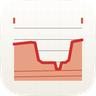
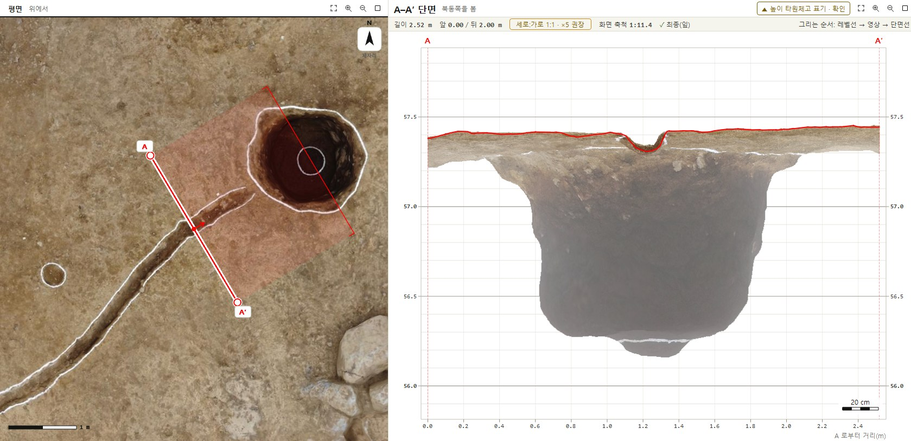
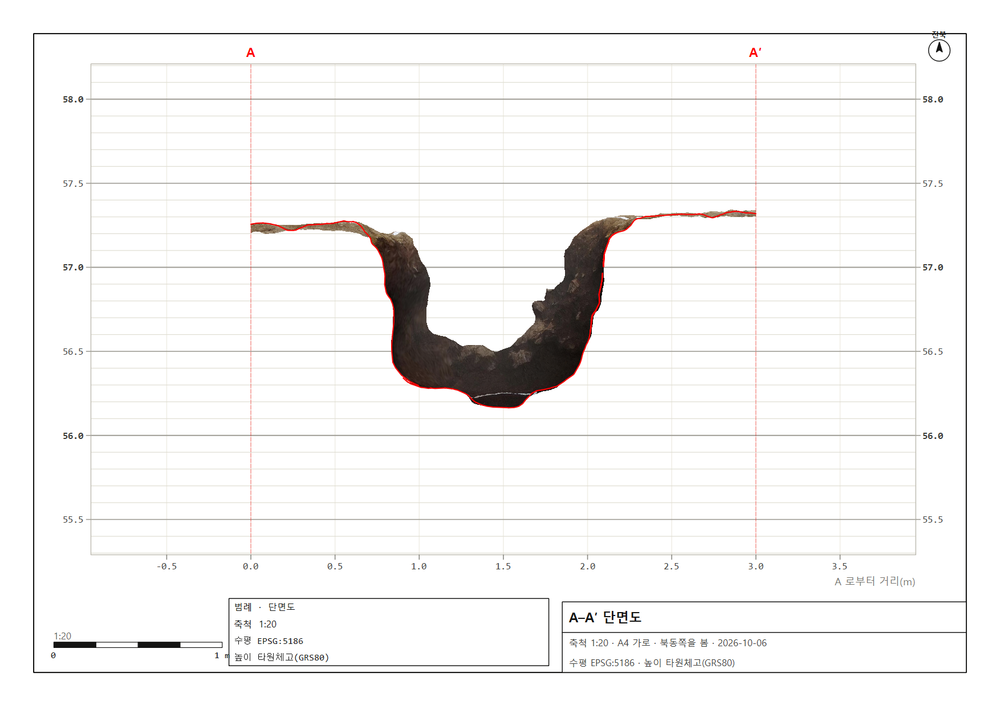

이어서 작업이 PC에 저장됨
Production_2
마지막 단면 A–A′ · 뒤 0.5 m · 화면 1:13.6 그대로 열립니다

발굴 단면뷰어 · 화면 시안평면에서 그은 선과 단면 화면에 나온 그림이 같은 것을 가리키게 만드는 시안입니다. 화판은 앱 창의 실제 크기(1920×1040)로 그렸습니다. 평면 사진, 단면, 도면은 이 PC의 실제 모델 Production_2.3mx를 1.2.1로 찍은 그림입니다.
저장된 A–A′은 좁은 도랑을 자릅니다. 단면 화면의 큰 회색 구덩이는 토층을 그리려고 일부러 보이게 한 입면 배경(뒤 2 m)입니다. 그런데 그 면이 단면선에서 몇 m 뒤에 있고 평면의 어디인지 화면에 나오지 않아 엇갈려 보였습니다. 1c에서 봅니다
입면 배경은 토층 그리기에 필요하므로 가리지 않습니다. 단면 영상 위 커서가 가리키는 면이 단면선 뒤 몇 m인지 바로 쓰고, 평면 띠 안의 같은 점에 고리를 찍습니다.
평면의 단면선에 단면 화면과 같은 거리 눈금(0.5 m)을 찍습니다. 한쪽에 커서를 올리면 다른 쪽에 같은 지점이 표시되어, 평면과 단면을 오가며 짐작할 필요가 없습니다.
창마다 빈 상태·계산 중·최종·오류를 그렸고, 치수·토큰·Qt 부품·확인 명령을 8장 「구현 대장」에 적었습니다.
평생 쓸 도구라서 배치가 곧 사용법이 되게 했습니다. 왼쪽에서 오른쪽이 일하는 순서이고, 화면마다 지금 누를 곳은 하나(흙색)입니다. 창 오른쪽 위의 「① ② ③」이 지금 어디에 있는지를 늘 보여 줍니다.
마지막 모델은 「이어서 열기」 하나로 단면선·두께·화면까지 그대로 돌아옵니다. 새 모델은 「모델 열기」(Ctrl+O)나 파일을 끌어다 놓기.
「단면선」(S)을 누르고 평면에서 A, A′ 두 점을 클릭합니다. 오른쪽에 단면이 바로 나옵니다. 끝점을 끌어 고치고, 숫자키 1–5로 입면 배경 깊이를 고릅니다.
「도면」을 누르면 같은 창에 「조판」 탭이 열립니다. 평면도·단면도를 고르고 축척을 10씩 맞춘 뒤 「PDF 저장」. 「작업」 탭으로 언제든 돌아갑니다.
A–A′을 1호 구덩이 가운데로 그은 직후입니다(실제 좌표, 뒤 0.5 m). 평면의 단면선에는 단면 화면과 같은 거리 눈금이 붙고, 단면 위 커서(1.20 m)가 평면에도 같은 자리에 검은 고리로 찍힙니다.
| 방위 | S 30.7° E 149.3° |
| 보는 쪽 | 북동 059.3° |
| 앞 / 뒤 | 0.00 / 0.50m |
| 지표 EL. | 57.25 – 57.33m |
| 바닥 EL. | 56.16m |
| 상단 너비 | 1.42m |
| 잘린 선 | 4줄 · 198점 |
| A | 148,083.065 X 98,121.100 Y |
| A′ | 148,084.595 X 98,118.520 Y |
정사영상 위에서도 선이 읽히게 빨강 아래 흰 테를 깝니다. 그리는 동안 길이·방위가 커서를 따라가고, 단면 판은 미리보기를 바로 그립니다.
#B0AEA5 점선 4·3 — 놓거나 Esc(되돌림)로 사라짐위는 1.2.1이 이 PC에 저장된 단면선(A–A′ 2.52 m, 뒤 2 m)을 그대로 연 실제 화면입니다. 아래는 같은 단면선을 이 시안대로 그린 모습입니다.

1234계산과 표시는 맞습니다. 입면 배경은 토층을 그리려고 일부러 보이게 한 것입니다. 다만 화면만으로는 그 면이 몇 m 뒤에 있고 평면의 어디인지 알 수 없습니다.
평면 단면선의 0.5 m 눈금과 1 m 숫자는 단면 화면의 가로축(A로부터 거리)과 같은 값입니다. A가 0입니다.
단면에서 커서를 움직이면 평면 단면선의 같은 거리에 검은 고리가 생깁니다. 평면 띠 안에서 커서를 움직이면 단면에 세로 점선과 「뒤 0.8 m」가 생깁니다.
띠 안에 0.5 m마다 깊이선을 긋고 바깥 끝에 「뒤 2.00 m」를 씁니다. 숫자키 1–5로 뒤 깊이를 바꾸면 띠도 같이 바뀝니다.
단면 영상 위 커서 이름표에 그 면이 단면선 뒤 몇 m인지 씁니다(깊이 버퍼). 토층선을 어느 벽면에서 따는지 확인할 때 씁니다. 입면 영상과 깊이 음영은 그대로 둡니다.
정보 줄 범례에 「입면 뒤 0–2.00 m」를 늘 씁니다. 뒤 깊이를 바꾸면 평면 띠, 띠 이름표, 범례가 함께 바뀝니다.
148081.467 98119.906 → 148082.751 98117.740, 길이 2.52 m, 뒤 2 mvex-suggest: relief=11.9cm suggest=x5, section-ok: polylines=1148083.83 98119.81, 단면선에서 보는 쪽으로 1.98 m · 반지름 ≈ 0.7 m#FF0000, 그리는 순서 레벨선 → 영상 → 단면선iTwin Capture Modeler(Flex)의 3MX를 왼쪽 3D 화면에서 기울여 보면, 단면선 자리에 자르는 면이 서고 그 면에 실제 단면(잘린 선 + 입면)이 붙습니다. 벤틀리 Descartes의 클립처럼 단면선 앞쪽 메시를 옅게 숨겨 잘린 면이 가려지지 않게 합니다.
이 그림은 같은 모델의 실제 정사영상과 단면 그림을 CSS 3D로 세워 만든 시안입니다. 실제 화면은 PlanView(OpenGL)가 메시와 함께 그립니다.
orbitPitch, liftUp)refZ)에 겹쳐 그림모델을 열지 않은 앱 첫 화면입니다. 마지막 모델을 단면선·두께·화면 그대로 되살리는 「이어서 열기」 하나만 흙색입니다. 아래 띠는 처음 켰을 때, 원본 없음, 여는 중의 세 가지 변형입니다.
| 모델 | 상태 | 좌표계 | 높이 | 단면 | 마지막으로 연 때 |
|---|---|---|---|---|---|
Production_2.3mx E:\new project jeju1\Productions\Production_2\Scene | 열 수 있음 | 5186 중부원점 | ▲ 타원체고 표기 | 3 | 오늘 21:42 |
Production_1.3mx 예시 E:\new project jeju1\Productions\Production_1\Scene | 열 수 있음 | 5186 중부원점 | ✓ EGM96 지정함 | 1 | 어제 17:10 |
북벽토층.obj 예시 D:\발굴\2026\북벽 | 열 수 있음 | ● 좌표계 없음 | — | 0 | 9월 30일 |
Production_old.3mx 예시 F:\USB\Production_old\Scene | ● 원본 없음 | — | — | 2 | 9월 12일 |
3MX는 대략 모양이 먼저 뜨고 디테일이 이어서 옵니다.
평면에서 A, A′ 두 점을 클릭. 뒤 깊이는 숫자키 1–5.
축척·용지를 고르면 넘치는지 미리 보여 줍니다. PDF·DXF·PNG·TIFF.
모델을 열고 평면에 선을 그으면 단면도가 바로 나옵니다.
QStackedWidget의 0번 쪽, 모델이 열리면 1번(작업)QTableView + 줄 높이 48, 머리글 아래 먹색 1 pxQFileInfo::exists, 홈을 보일 때마다상태는 알약 대신 점·세모·체크와 글자로 말합니다. 오류만 붉은 바탕이고, 주의는 세모와 먹색 글자입니다. 진행 막대·켜짐·초점은 모두 먹색입니다.
왼쪽 목록에서 단면을 누르거나 새로 그으세요.
${plus}새 단면 ${N}「도면」(Ctrl+P)을 누르면 별도 창 대신 작업 화면 자리에 「조판」 탭이 열립니다. 위의 「평면도 | 단면도」로 고르고, 두 도면은 같은 바깥 도곽(테두리·진북·범례·표제란·축척 막대)을 씁니다. 그림 칸만 다릅니다.

QSpinBox 10 단위, 위·아래 화살표로 10씩, 상한 없음, 값은 도면마다 따로 저장QPainter::scale(1, z)처럼 가로·세로를 따로 늘이는 배율은 쓰지 않습니다. 글자는 늘 같은 pt입니다.이 앱의 목표는 발굴조사보고서의 평·단면도를 일러스트레이터에서 그리는 밑그림을 만드는 것입니다. 그래서 내보낸 파일은 실제 축척의 mm 대지이고, 선·글자는 벡터, 영상은 맨 아래 잠긴 층이며, 그리기용 빈 층을 미리 둡니다.
대지는 용지 그대로 297 × 210 mm. 1:20이면 자로 재서 1 m가 정확히 50 mm입니다. 확대·축소 없이 바로 씁니다.
단면선·레벨선·도곽은 패스, 숫자·표제란은 글자로 들어갑니다. 단면선을 고르면 점 198개짜리 패스입니다.
입면·정사영상은 300 dpi로 맨 아래 잠긴 층에 들어갑니다. 위의 빈 층에 토층선·유구 윤곽을 그리면 됩니다.
일러스트레이터가 PDF 층·SVG 묶음을 레이어로 받는지는 버전마다 달라, 이 PC에서 실제로 열어 확인한 뒤 기본 형식을 정합니다.
#FF0000 0.35 mm, 그리는 순서 레벨선 → 영상 → 단면선창 폭은 S 440(물음) · M 560(입력) · L 860(목록·결과) 세 가지, 여백 24입니다. 단추 줄은 오른쪽부터 취소, 그 왼쪽에 주 단추가 오고, 보조 단추는 맨 왼쪽에 둡니다. Enter = 주 단추, Esc = 취소입니다.
Z 값은 바꾸지 않고 이름표만 바꿉니다. 이 이름이 도면 범례·표제란과 상태줄에 들어갑니다.
수평 EPSG:5186 · 미터. 측량앱에서 복사한 「X, Y」를 붙여 넣어도 됩니다.
모델 파일은 그대로입니다. 지운 뒤에도 Ctrl+Z로 되돌릴 수 있습니다.
F:\USB\Production_old\Scene — 파일이 옮겨졌거나 드라이브가 빠졌습니다. 같은 파일을 다시 찾으면 단면 목록 2개가 그대로 붙습니다.
| 모델 · 화면 | |
|---|---|
| ${Ctrl+O} | 모델 열기 |
| Ctrl+Shift+O | 최근 모델 이어서 열기 |
| F · T | 맞춤 · 위에서 보기(제자리) |
| Ctrl+1 · Ctrl+2 | 평면 · 단면 보기 켜기/끄기 |
| ${X} | 단면 세로 과장 ×1·×2·×5·×10 (화면만) |
| 되돌리기 | |
| ${Ctrl+Z} · Ctrl+Y | 되돌리기 · 다시 (200단계) |
| 단면 | |
|---|---|
| ${S} | 단면선 그리기 — A 클릭, A′ 클릭 |
| ${N} | 새 단면(다음 글자 이름) |
| ${1–5} | 뒤 깊이(입면 배경) 0.5 · 1 · 2 · 3 · 5 m |
| ${[ ]} · ${curly} | 평행 이동 0.1 m · 1 m |
| ${R} | 방향 반전(보는 쪽 바꾸기) |
| ${Enter} · ${Shift} | 좌표 입력 · 동서·남북 고정(그리는 중) |
| 도면 | |
| ${Ctrl+P} | 조판 탭 — 평면도·단면도 |
레벨선이 먼저 깔리고, A·A′이 서고, 실제 구덩이 단면이 왼쪽부터 드러납니다. 앱이 준비되면 남은 그림을 빨리 끝내고 홈을 엽니다. 늦어도 5초를 넘기지 않습니다.
| 크기 | 700 × 400, 화면 가운데, 모서리 12 |
| 머무는 시간 | 준비되면 남은 그림을 0.4초 안에 끝내고 닫음 · 최대 5초 |
| 상태 글 | 「앱을 준비하고 있습니다」 → 「잠시 후 홈 화면이 열립니다」 → 「준비 완료」 |
| 그림 | 실제 구덩이 단면(A–A′ 3.00 m) · 레벨선 10 cm · 숫자 50 cm |
| 색 | 종이 · 먹 · 단면선 빨강 하나 · 아래 기반암 띠 |
| 움직임 | QVariantAnimation OutCubic · 레벨선 0.9 s · 단면 1.3 s |
| 0.0 s | 이름 · 안내 두 줄 · 기반암 띠 |
| 0.35 s | 레벨선 위에서 아래로(선마다 45 ms) |
| 1.55 s | A · A′ 끝선 |
| 1.9 s | 입면 영상과 단면선이 왼쪽부터 드러남 |
| 3.5 s | 「준비 완료」 → 홈 |
시작 화면은 제안입니다. 1.2.1에는 없습니다.
화면은 발굴조사 보고서의 도판 한 장입니다. 바탕은 종이, 글자는 먹으로 쓰고, 흙색은 손이 갈 곳 하나에만 씁니다. 빨강은 단면선에만 씁니다. 이 화판의 값이 app/theme.hpp의 토큰입니다.
| 좌표 · 소수 셋째, 천 단위 쉼표 | 148,083.065m |
| 표고 · EL. 소수 둘째 | EL. 56.29m |
| 레벨 숫자 · 50 cm마다 소수 첫째 | 57.5 · 57.0 · 56.5 |
| 길이 · 깊이 | 3.00m |
| 방위 · 보는 쪽 | S 30.7° E · 북동 |
| 축척 · 글 속 / 종이 위 | 1:110 · 축척 1 : 110 |
| 좌표계 · 번호와 원점 | 작업 5186 · 중부원점 |
| 이름 · 명조 | A–A′ · Production_2 |
화면 구역마다 Qt 부품과 크기, 상태마다 무엇이 켜지는지, 그리고 조판이 다시 깨지지 않게 잠그는 확인을 적었습니다. 개발은 이 순서대로 하고, 고칠 때마다 아래 확인을 돌려 캡처와 기록으로 판정합니다.
MainWindow에는 Q_OBJECT 없음 · 연결은 람다 · 형 변환은 static_cast| 구역 | Qt 부품 · objectName | 크기 | 요점 |
|---|---|---|---|
| 탭 · 세 걸음 | QTabBar#ribbonTabs + 오른쪽 QWidget#wsteps | 34 | 세 걸음은 모델·단면선·도면 유무로 갱신(refreshSteps()). 누르면 그 일로(열기 / S / Ctrl+P) |
| 리본 타일 | QToolButton#tile TextUnderIcon, iconSize 28 | 58 × 74 | 켜짐 = :checked 귀리색, 손에 든 도구 = property hand=true 먹색, 주 = #primary 흙색(화면당 하나) |
| 지금 도구 줄 | QWidget#ctxBar | 40 | 도구를 들었을 때만 보임. 할 일 한 문장 · 키 · 길이·방위 · 닫기 |
| 작업 · 조판 탭 | QTabBar#viewTabs + QStackedWidget body_ | 34 | 조판은 showSheetTab으로 같은 창 안에. 별도 OS 창·전체화면 없음 |
| 단면 목록 | QListView + 그리기 대리자 | 240 · 줄 66 | 썸네일 72×44, 이름 명조 16, 메타 모노 11. 두 번 = 이름, Del = 지우기 확인 |
| 평면 | PlanView(QOpenGLWidget) 덧그림 | 최소 360 | 단면선 흰 테 7 px + 빨강 3 px, 0.5 m 눈금·1 m 숫자(선이 80 px 이상일 때), 띠 이름표, 커서 고리 |
| 단면 | SectionView · paintSectionDoc | 최소 420 | 입면 영상 그대로. 커서 이름표에 입면 깊이 「뒤 d m」. 정보 줄 범례 |
| 선택한 단면 | QWidget#inspector · 수치 대장 QGridLayout | 300 | 길이·깊이 모노 20, 방위·보는 쪽·앞/뒤·지표/바닥 EL·끝점 좌표, 「좌표 입력…」 「이 단면으로 도면」 |
| 상태줄 | QStatusBar + 영구 위젯 | 30 | 왼쪽 「다음:」 한 문장, 오른쪽 커서 · 좌표 · 축척 · 좌표계 · 높이 배지 |
| 창 | QDialog S/M/L | 440 · 560 · 860 | 제목 줄 이름만, 물음 명조 20, 주 단추 하나(Enter), 취소(Esc) |
| 상태 | 리본 | 지금 도구 줄 | 단면 판 | 오른쪽 판 | 상태줄 「다음:」 |
|---|---|---|---|---|---|
| 모델 없음 | 열기·최근만 | 없음 | 홈 화면 | — | 모델을 여세요 — 최근 모델을 누르거나 끌어다 놓기 |
| 모델만 | + 단면선 · 두께 · 표시 · 높이 기준 | 없음 | 「단면선을 그으세요」 | 「고른 단면이 없습니다」 + 새 단면 | 「단면선」(S)으로 A, A′을 클릭하세요 |
| A 찍음 | 단면선 먹색(손에 듦) | A′를 클릭 · Shift · Enter · Esc | 미리보기(거친) | 길이·방위 실시간 | 끝점 A′을 클릭하세요 |
| 최종 | + 도면(흙색) · DXF · 영상 | 고치는 중(끝점 끌기 · [ ] · R · 1–5) | ✓ 최종(잎) | 수치 대장 전체 | 다음: Ctrl+P 「도면」 |
| 계산 실패 | 그대로 | 그대로 | 오류 띠(붉은 바탕) + 「다시 긋기」 | 마지막 값 흐리게 | 무엇이 잘못됐는지 + 할 일 |
| 조판 | 내보내기 탭 · 평면도/단면도 켜짐 | 없음 | 조판 탭이 작업 자리를 채움 | 다 되면 「PDF 저장」, 돌아가기는 「작업」 탭 | |
| 판정 | 어떻게 재나 |
|---|---|
| 그림이 칸 안 | 그린 영상 사각형 ⊇ 그림 칸(가득) · 범위 전체가 영상 사각형 안 |
| 숫자는 칸 밖 | 바깥 숫자 글자 상자마다 그림 칸과 겹치는 넓이 = 0 |
| 글자 안 늘어남 | 글자를 그릴 때 QPainter::worldTransform()의 m11 = m22, 회전 없음 |
| 휠 = 간격만 | 휠 +3 뒤 이웃 숫자 사이 px 증가, 글꼴 px 같음 |
| 그림 사라짐 없음 | 캡처에서 칸 안 종이색이 아닌 화소 비율 > 50 %, 단면선 순수 빨강 화소 > 0 |
| 조판편집 | 그림만 12 mm, 도곽·나침반·범례 상자 위치 같음, 숫자 값은 바뀜 |
| 축척 화살표 | 두 QSpinBox의 singleStep() == 10 |
core/src/sheet.cpp | 평면 맞춤 축척(10 단위)과 칸을 채우는 범위 계산 → tests/test_sheet.cpp에 시험 먼저 |
app/sheetexport.cpp | 평면 칸 채우기 · 바깥 숫자 · 휠은 그림 좌표만 · 확인용 기록 |
app/sectionview.cpp | 조판 확대 때 레벨선·거리 범위와 간격을 확대된 좌표로 다시 계산 |
app/main.cpp | --sheet-check 추가 |